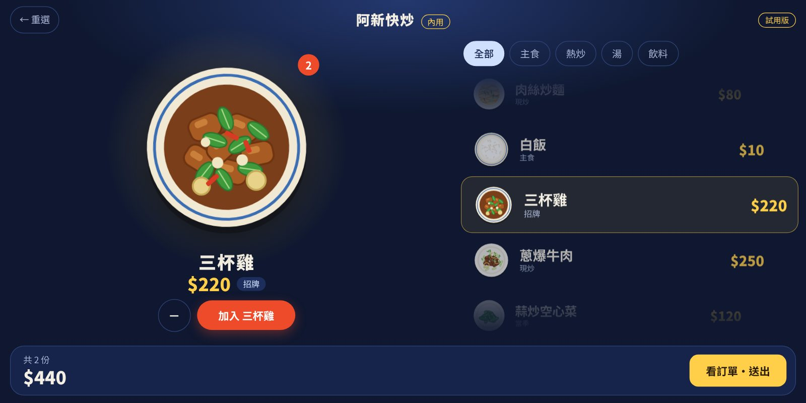

KitLab 商店 › 小店工具 › 點餐收銀機
客人自己點，
沒網路也能用。
KitLab 點餐收銀機把「客人自助點餐」和「櫃檯接單收款」放在同一個網頁 App 裡。第一次連網打開，之後沒有網路也能開；菜單和訂單只存在你自己的平板或電腦裡，不會傳到我們的伺服器。
提供者 KitLab 官方 官方技能包

怎麼用
一台平板或電腦就夠。小店用起來不需要學。
設定店名和密碼
用瀏覽器打開，輸入店名、設一組店員密碼，先載入示範菜單或從空白開始。
建立你的菜單
加上餐點、價格、分類和照片。賣完的按一下就標示「售完」，客人畫面會自動變灰。
放在櫃檯，客人自己點
客人選內用或外帶，滑動轉盤挑餐點，點完拿到一個大號碼。閒置一段時間會自動回到開始畫面。
店員接單、收款、看報表
在收銀畫面看新訂單、收款算找零、叫號出餐，一天結束看營收和最熱門的餐點，匯出 Excel。
也能由店員代客點餐：收銀畫面按「代客點餐」就用同一套轉盤介面。
網路不穩的地方，
生意不用停。
夜市攤位、山上的店、地下室、展覽會場，訊號常常時有時無。多數雲端點餐系統一斷線就卡住。這個 App 把整套介面存在你的裝置裡，斷線時照常點餐、收款。
資料不經過我們的伺服器，所以也沒有每月的伺服器費要你分攤。
變成店裡的專用機
開機就自動進入點餐畫面、全螢幕、不休眠，客人不會不小心關掉。完整步驟在 App 的「設定 → 營業模式」，這裡先講重點。
Windows 電腦（家用版也行）
- 用 Chrome 建一個捷徑，加上
--kiosk和專用資料夾的參數，打開就是全螢幕。 - 把捷徑放進
shell:startup，開機自動啟動。 - 設定自動登入、螢幕和睡眠都選「永不」。
Windows 鎖定成單一畫面
- Windows 專業版、企業版、教育版可以用「資訊站（Kiosk）」模式，只能開指定的程式，被關掉會自動重開。
- 家用版沒有這個功能。
Android 平板
- 用 Chrome 加到主畫面，從圖示開，就是全螢幕。
- 用系統的「螢幕固定」把它鎖在這個 App。
iPad
- 用 Safari 加入主畫面，從圖示開。
- 用「引導使用模式」鎖在這個 App，自動鎖定設成「永不」。
先測資料會不會保留。Microsoft Edge 的營業模式是以無痕（InPrivate）方式執行，官方文件沒有說明關掉後資料會不會留下。因為菜單和訂單都存在瀏覽器裡，請先做測試：點一張單，重開機，看單還在不在。App 的「設定 → 營業模式」有「啟動次數」可以檢查。
運作方式，寫清楚
誰負責什麼，先講明白。
它可以做到
- 客人自助點餐：內用、外帶、備註、號碼單。
- 櫃檯接單、收現金算找零、叫號、取消與還原。
- 菜單管理：照片、分類、售完標示。
- 今日與區間報表，匯出 Excel 明細，下載備份檔。
- 沒有網路時照常使用。
目前沒有
- 不開立發票，也不接信用卡或行動支付，收款是現金。
- 客人機和收銀機兩台不同的裝置，還不能互相同步。
- 熱感應出單機：目前用系統列印。
- 會員、庫存、多分店。
你要自己做的
- 是否需要開立發票、怎麼開，請依法自行處理。
- 每週下載一次備份檔，存到別的地方。資料只在你的裝置上，裝置壞了或清掉瀏覽器資料就沒了。
- 準備一個備案（例如紙本單），機器壞掉時生意不要停。
試用版
- 功能完整，每天最多 20 筆訂單，供評估使用。
- 單號小條與報表會印上「試用版」。
- 正式營業請購買啟用，購買後會拿到啟用碼或啟用連結。
常見問題
需要一直連網路嗎？
不用。第一次要連網打開網址，把 App 存進裝置。之後沒有網路也能開和使用。有網路時，App 會在背景檢查有沒有新版本。
我的菜單和訂單存在哪裡？
存在你正在使用的那台裝置的瀏覽器裡，不會傳到我們的伺服器。好處是隱私和不用付伺服器費；代價是裝置壞掉資料就沒了，所以請定期下載備份檔。
可以兩台裝置一起用嗎？
同一台裝置開兩個視窗（一個客人畫面、一個收銀畫面）可以即時同步。兩台不同的裝置還不能同步，這是之後要做的。目前小店可以用一台平板：客人下單時會響一聲，店員點右下角的「店員」輸入密碼進入收銀畫面。
可以在試用版就開始營業嗎？
試用版是給你評估用的，功能完整但每天最多 20 筆訂單，也會印上「試用版」。要正式營業，請購買啟用。
能開發票或刷卡嗎？
目前不行。本系統不開立發票，是否需要開立、如何開立，請店家依法自行處理。收款只支援現金，也就是記錄收了多少、找多少。
支援哪些裝置？
有現代瀏覽器的平板、電腦、手機都可以：Chrome（Windows、Android）、Edge、Safari（iPad）。建議用 10 吋左右的平板當客人點餐機。
怎麼購買？
目前請加 LINE 告訴我們你的店。確認需求後會給你啟用碼，也可以幫你把菜單建好。
先試試看
想買斷、想請我們幫你建好菜單，或有想要的功能，加 LINE 告訴我們。
LINE ID：xin883xin